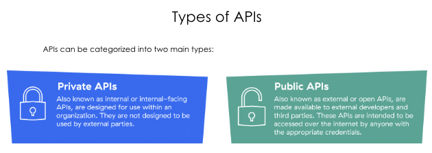
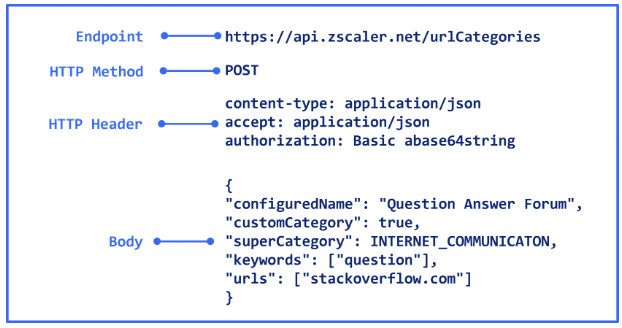

COURSE OVERVIEW
EDU-270: Zero Trust Automation
This course explores how Zscaler APIs and the OneAPI framework enable enterprises to rapidly adopt Zero Trust Architecture through automation. You will cover everything from basic API concepts through hands-on configuration with Postman.
Course Sections
01
API Overview
What APIs are, how they work, HTTP methods, RESTful principles.
02
Zero Trust Automation Platform
ZIA, ZPA, ZDX, Client Connector APIs. ZIdentity and OneAPI.
03
Architecture, Framework & Use Cases
OneAPI architecture, traditional vs. new framework, real use cases.
04
Troubleshooting & Best Practices
Error codes, rate limiting, secure usage, maintaining consistency.
Learning Outcomes
After completing this course you will be able to:
- Describe the basic concepts of APIs
- Discuss Zscaler APIs using ZIA, ZPA, ZDX, and Zscaler Client Connector endpoints
- Explain the role and importance of OneAPI within the Zscaler Automation Framework
- Describe ZIdentity, including its authentication and provisioning workflow
- Identify the necessary steps to access OneAPI
- Describe the architecture and workflow of OneAPI within Zscaler Zero Trust Automation
- Configure OneAPI using Postman for various Zscaler services
- Identify common use cases for Zero Trust Automation
- Discuss the necessary troubleshooting steps and best practices for using OneAPI
WHAT IS AN API
API Fundamentals
An API (Application Programming Interface) is a set of rules and protocols that allows different software applications to communicate with each other. It defines the methods and data formats applications use to request and exchange information.
Core definition: An API is the messenger between applications. It takes a request from one system, tells another system what to do, and returns the response — like a waiter taking your order to the kitchen and bringing back your food.
How APIs Work: Request-Response Cycle
Every API interaction follows the same pattern. A client sends a request to a server, the server processes it, and returns a response.
| Component | Role | Example |
|---|
| API Client | Sends the API request | Postman, your script, Zscaler portal |
| Endpoint | The URL that receives the request | api.zsapi.net/zia/api/v1/users |
| HTTP Method | The type of operation | GET, POST, PUT, DELETE |
| Request Headers | Metadata about the request | Authorization, Content-Type |
| Request Body | Data sent with the request (JSON) | User details for POST request |
| API Server | Authenticates, validates, retrieves data | Zscaler backend service |
| Response Headers | Metadata about the response | Content-Type, Rate-Limit info |
| Response Body | The returned data (JSON) | User list, policy details |
API Status Codes
200
OK
Request successful. Data returned.
201
Created
Resource successfully created.
400
Bad Request
Invalid or malformed request.
404
Not Found
Resource does not exist.
Private vs. Public APIs
PRIVATE
Internal APIs
Used within an organisation. Access restricted to internal teams. Not exposed externally. Used for internal integrations and automation.
PUBLIC
External APIs
Exposed to external developers or partners. Enable third-party integrations. Often require API keys or OAuth tokens for access.

Private APIs (internal use) vs. Public APIs (external access) — both types are used within the Zscaler ecosystem
RESTFUL APIs
RESTful API Principles
A RESTful API (Representational State Transfer) uses standard HTTP methods to perform operations. All Zscaler APIs are RESTful, meaning they follow a consistent set of architectural constraints.
Stateless
Each request contains all information needed. No session state is stored on the server between requests.
Client-Server
Client and server are separate. Client handles UI/UX; server handles data and business logic.
Cacheable
Responses can be cached to improve performance. OneAPI uses caching for frequently requested data.
Uniform Interface
Consistent way to interact with resources. All Zscaler APIs follow the same patterns and conventions.
Layered System
Client doesn't need to know if it's talking to the actual server or an intermediary (like OneAPI Gateway).
Because all Zscaler APIs follow RESTful principles through OneAPI, a developer only needs to learn one pattern. The same request structure, authentication approach, and response format works across ZIA, ZPA, ZDX, and Client Connector APIs.
HTTP METHODS
HTTP Methods & Request Structure
APIs use HTTP methods to indicate the desired action. Each method maps to a CRUD operation and has a specific rate-limit weight in Zscaler's OneAPI.
GET
Retrieve Data
Read-only. Retrieves resources without modifying them. Light weight — up to 4,000 req/hr in OneAPI. Example: list all users, get policy details.
POST
Create Resource
Creates a new resource on the server. Medium weight — 1 req/sec, 400 req/hr. Example: add a URL filtering rule, create a user.
PUT
Update Resource
Updates an existing resource in its entirety. Medium weight — same limits as POST. Example: update a policy rule configuration.
DELETE
Remove Resource
Deletes a resource from the server. Heavy weight — 1 req/min, 4 req/hr. Use carefully — irreversible action.
API Request Structure
Endpoint URL
The address of the API resource. For Zscaler OneAPI: https://api.zsapi.net/{product}/api/v1/{resource}
HTTP Headers
Metadata sent with the request. Key headers: Authorization: Bearer {token}, Content-Type: application/json
Request Body (JSON)
Data payload for POST/PUT requests. Must be valid JSON. Zscaler provides JSON templates to standardise configurations.

API request structure showing endpoint, method, headers, and JSON body components
WHY APIS MATTER
Why APIs Power Zero Trust Automation
APIs are the foundation of the Zscaler Zero Trust Automation strategy. Without APIs, every configuration change would require manual portal interaction — slow, error-prone, and impossible to scale.
Integration
Connect Zscaler with SIEM, ITSM, and third-party tools. ServiceNow + ZDX is a key example.
Automation
Automate repetitive tasks — policy deployment, user provisioning, URL filtering updates.
Monitoring
Pull real-time health, performance, and security telemetry programmatically.
Authentication
ZIdentity OAuth tokens allow secure, controlled programmatic access to all Zscaler services.
Developer Engagement
Partners and customers can build on top of Zscaler's platform using documented, stable APIs.
Zscaler's goal is to empower enterprises to rapidly adopt Zero Trust Architecture. Key benefits of this automation approach include: Improved Security Posture, Streamlined Processes, Better ROI, Reduced Human Error, Faster Threat Response, and Enhanced Visibility and Control.